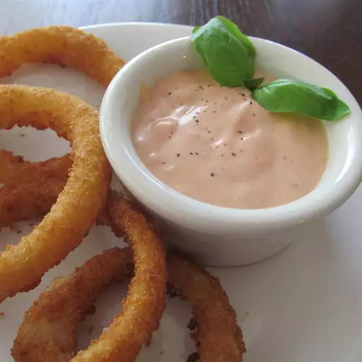

Burger Sauce
Return Home

Description
This tangy burger sauce is similar to thousand island, but better! Use it at a sauce for your
burger, or put in on the side and dip your fries and onion rings in. Whatever you decide, you're
going to love this sauce.
Source
Ingredients
- 1 cup mayonnaise
- 1/2 cup ketchup
- 1/4 cup yellow mustard
- 2 tsp dried minced onion
- 1/4 tsp dried minced garlic
- 1/8 tsp white vinegar
- hot sauce to taste
- seasoned pepper to taste
Directions
- Whisk together mayonnaise, ketchup, mustard, onion, garlic, and vinegar in a bowl.
Season with hot sauce and pepper to taste.
- Cover and chill for at least 1 hour prior to serving.
- Enjoy on anything!